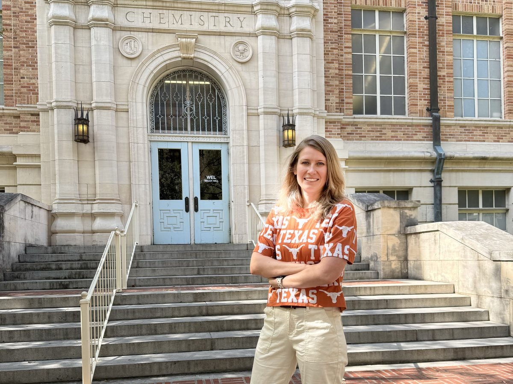
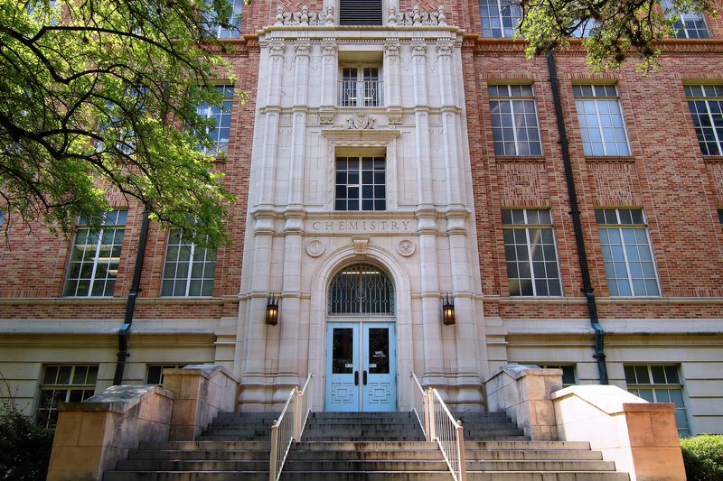
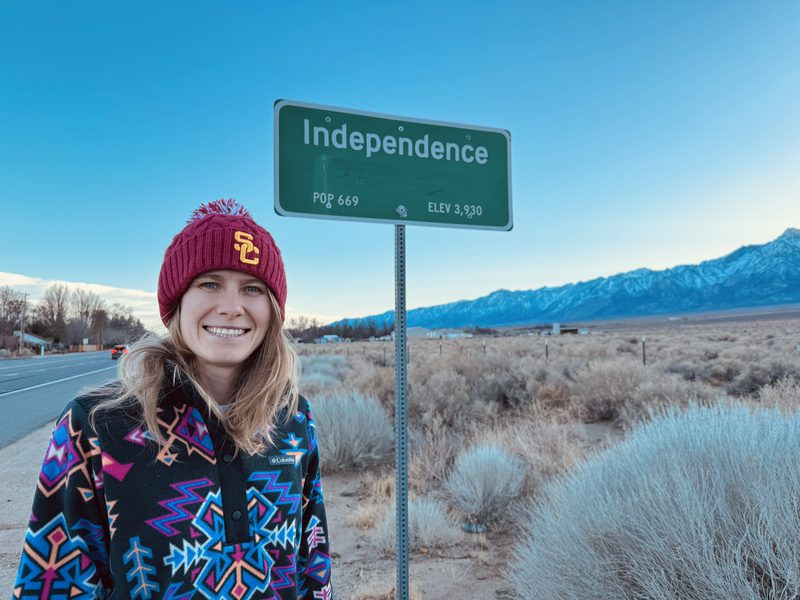

Papers, awards, talks, and lab announcements will be posted here as they happen
The lab's news (est. 2027)

-
CPRIT Recruitment of New Faculty Award Award
Dr. Olga Eremina received a CPRIT Recruitment of New Faculty Award from the Cancer Prevention and Research Institute of Texas, supporting the launch of the Eremina Laboratory at UT Austin!
The Award supports a “Multiplexed Immune Profiling of Sentinel Lymph Nodes to Guide Surgical and Therapeutic Decision-Making in Head and Neck Cancer” research project. CPRIT announcement →

-
The lab opens in January 2027 Lab
The Eremina Laboratory will begin in the Department of Chemistry at UT Austin in January 2027!
Recruiting is open now for the first cohort of graduate students, postdocs, and undergraduate researchers. How to join →

-
NIH K99 Pathway to Independence Award Award
Dr. Olga Eremina received an NIH K99/R00 Pathway to Independence Award from NIBIB/NIA!
The K99 phase of this Award supports first experiments on a “Development of Highly Multiplexed Raman Imaging Platform for Alzheimer's Disease” research project at the University of Southern California (January 2025 – December 2026). Project on NIH RePORTER →

Be there for the first experiments and papers
The lab opens in January 2027 and is recruiting its first cohort now.